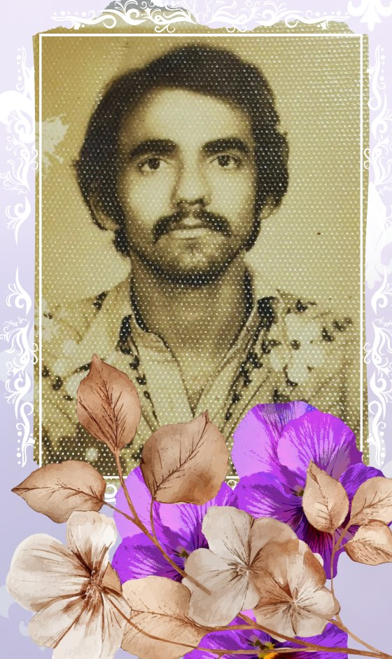

Centro Acadêmico
CALET
Centro de Humanidades · UFCG
O CALET
É a entidade representativa máxima dos estudantes dos cursos de Letras — Língua Portuguesa, Inglesa, Espanhola, Francesa e Libras — da Unidade Acadêmica de Letras.
Historicamente combativo e culturalmente ativo, o CALET constitui-se como o espaço físico e virtual de conforto, amparo e busca por direitos para todos os alunos e alunas. Mais do que uma representação burocrática, o Centro atua como um polo de fomento ao pensamento crítico e à integração universitária.
Atuação
Gestão
- Presidência — Rafael (Letras — Língua Inglesa)
- Vice-presidência — Jay Dantas (Letras Libras)
- Tesouraria — Emanuel (Língua Portuguesa, diurno) e Helly (Língua Portuguesa, noturno)
- Comunicação — Graziele, Thiago André e Giovana (Língua Portuguesa, noturno)
- Assistência Estudantil — Sarah Rizya (Língua Portuguesa, diurno)
Nossa história: quem foi Álvaro Luiz?

O Centro Acadêmico carrega com orgulho o nome do poeta Álvaro Luís Guedes Pinheiro (1960–1981), uma homenagem que mantém viva a memória daquele que foi um dos mais promissores estudantes de Letras desta instituição.
Álvaro Luiz foi aluno do curso quando a atual UFCG ainda era o Campus II da Universidade Federal da Paraíba. Poeta de sensibilidade aguçada e intelectual rigoroso, destacava-se entre seus pares pela dedicação à escrita e pela defesa da qualidade acadêmica. Relatos de colegas da época o descrevem como um estudante à frente de seu tempo, que insistia na prática exaustiva da reescrita textual como caminho para a excelência literária.
Sua trajetória foi interrompida precocemente aos 21 anos, em março de 1981. Embora sua vida tenha sido breve, o impacto de sua presença no Campus Bodocongó foi tão marcante que, após seu falecimento, o movimento estudantil decidiu eternizar seu nome na entidade que representa os futuros profissionais das Letras.
Álvaro Luiz simboliza o ideal do estudante de Letras da UFCG: apaixonado pela palavra, engajado com a cultura e eterno aprendiz da linguagem.